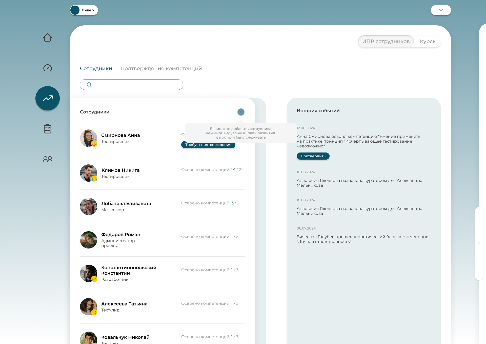
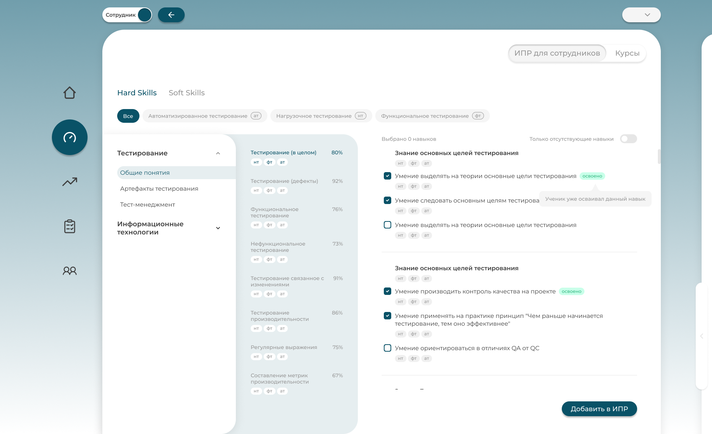
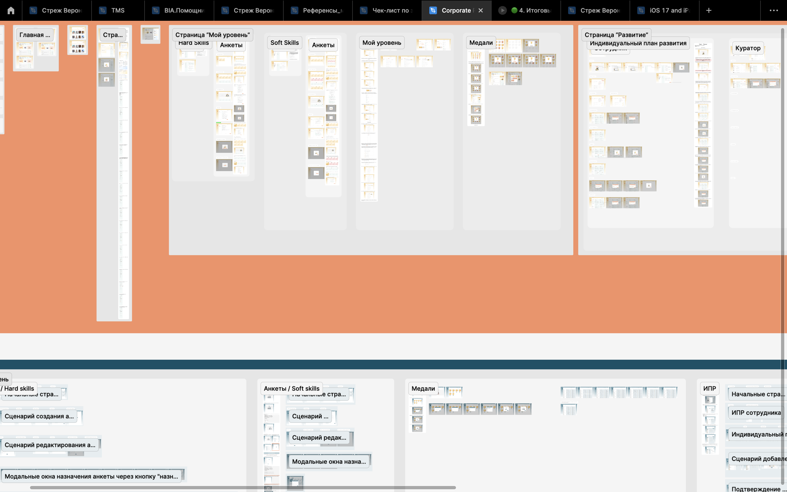
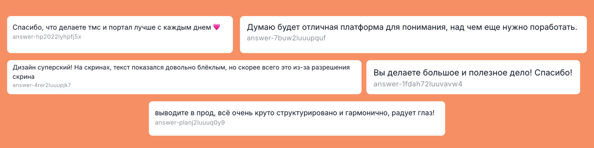

Портал
февраль – август 2024
Корпоративный портал для отдела тестирования, ДИТ Правительства Москвы. Единый сервис для управления задачами, роста компетенций и командного взаимодействия.
Моя зона ответственности — полный цикл: исследования, UX/UI, финальная передача в разработку.

Задача
Создать корпоративный портал, чтобы закрыть потребность в «виртуальном офисе» и усилить вовлечённость распределённой команды тестировщиков. ТЗ — построить систему с индивидуальными планами развития, рабочей коммуникацией и автоматизацией типовых процессов.
Процесс
- Спроектировала UX, подготовила всю визуальную систему (под мой макет писался бэк).
- Настроила оптимальный дизайн-процесс в команде в рамках ограниченного времени
- Донесла ценность исследований и внедрила их в работу
- Проводила интервью и юзабилити тестирования с пользователями. Сформировывала задания и прототипировала интерфейс.
- Взаимодействовала с frontend и backend разработчиками, с тестировщиками. С фронтами выстраили процесс передачи макетов.
- Реализовала UI-kit с документацией
- Презентовала и защищала свои решения перед командой.
Ключевые решения
- Две сущности Портала — Для сотрудника и для Лида
- Персонализированная лента, обратная связь, награды за достижения.
- Индивидуальные планы развития сотрудников, интеграция с системой оценки компетенций.
- Календарь задач, трекинг отпусков/наград, разделы для развития и командной коммуникации.
- Для лидеров — инструменты аналитики, назначения и гибкого администрирования
Результат
- 94 пользователя за первые недели после запуска.
- 70% положительных самостоятельных отзывов.
- 67 заполненных анкет для дальнейшего развития персонала.
- 42 поста и 17 комментариев в ленте за первые 2 месяца (рост вовлеченности и узнаваемости внутри команды).
- Портал стал повседневным инструментом команды



